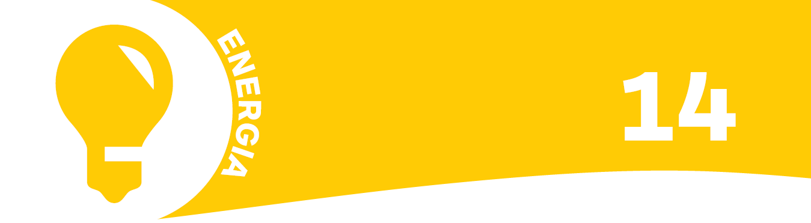

La città intelligente
Ci sono parole che segnano un'epoca e smart city è una di queste. Ma che cosa è una smart city? Possiamo definirla come una città progettata in modo da migliorare la qualità della vita e dell'ambiente e diminuire i consumi. Diventa un obiettivo importante, tenendo conto che entro il 2050 quasi i due terzi della popolazione mondiale risiederà nelle aree urbane.
Nella città intelligente batte un cuore tecnologico: l'innovazione è utilizzata per diminuire il consumo di energia, gestire meglio i rifiuti, abbassare il livello del traffico.
Sono solo alcuni esempi! E grazie all'innovazione è possibile comunicare in tempo reale informazioni importanti per la vita della città. L'integrazione di tutti i sistemi in un'unica rete intelligente, di cui faranno parte i nostri tablet e smartphone, renderà ognuno di noi protagonista e consentirà alla città di crescere e mutare sulla base delle esigenze misurabili dei cittadini.
Nella città intelligente, infatti, il cittadino non è soltanto un
consumatore passivo di servizi e informazioni. Può avere il ruolo di “sensore” e trasmettere dati, segnalare disservizi, immettere energia in rete...
E naturalmente contribuire, con comportamenti virtuosi, allo sviluppo sostenibile della sua città.
La vignetta vuole rappresentare la nostra idea di città intelligente, ma con tre anomalie. Quali sono?
Sul retro del pannello puoi trovare la soluzione e saperne di più sulle sei innovazioni che possono aiutarci ad essere cittadini ecosostenibili.